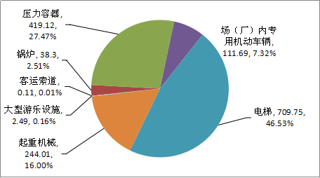
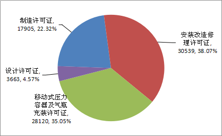
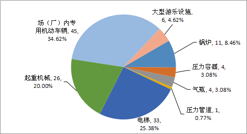
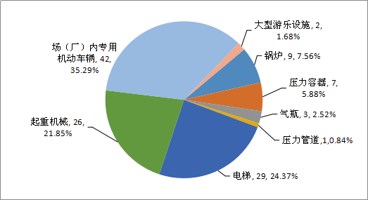
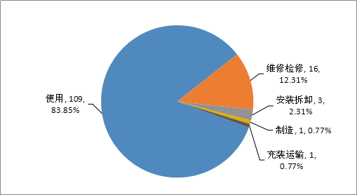
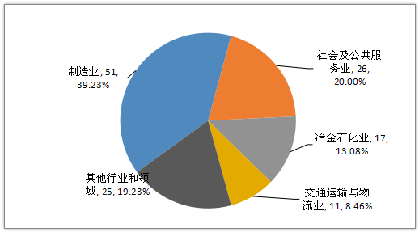
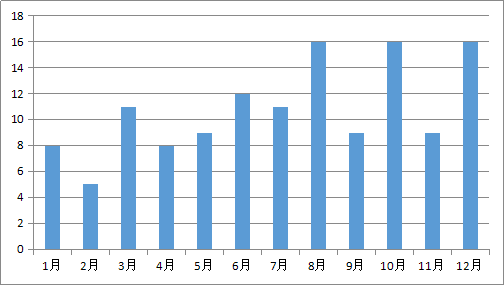
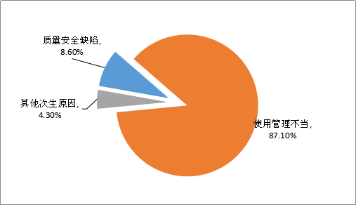

国家市场监管总局通告2019年全国特种设备安全状况
近日，国家市场监管总局发布2019年全国特种设备安全状况通告。2019年，全国共发生特种设备事故和相关事故130起，死亡119人，受伤49人，与2018年相比，事故起数减少37起、降幅22.2 %，死亡人数减少34人、降幅 22.2%，受伤人数减少11人、降幅18.3 %。万台特种设备死亡率为 0.11。全年未发生重特大事故，特种设备安全形势总体平稳。
一、特种设备基本情况
（一）特种设备登记数量情况。
截至2019年年底，全国特种设备总量达1525.47万台。其中：锅炉38.30万台、压力容器419.12万台、电梯709.75万台、起重机械244.01万台、客运索道1089条、大型游乐设施2.49万台（套）、场（厂）内专用机动车辆111.69万台。另有：气瓶1.64亿只、压力管道56.13万公里。（见图1）

图1 2019年特种设备数量分类比例图
（二）特种设备生产和作业人员情况。
截至2019年年底，全国共有特种设备生产（含设计、制造、安装、改造、修理、气体充装）单位78111家，持有许可证80227张，其中：设计单位3634家、持有许可证3663张，制造单位17282家、持有许可证17905张，安装改造修理单位30470家、持有许可证30539张，移动式压力容器及气瓶充装单位27328家、持有许可证28120张。（见图2）特种设备作业人员持证1215.55万张。

图2 2019年特种设备生产许可证分类比例图
（三）特种设备安全监察和检验检测情况。
截至2019年年底，全国共设置特种设备安全监察机构4161个，其中国家级1个、省级33个、市级481个、县级2552个、区县派出机构1094个。全国特种设备安全监察人员共计90164人。
截至2019年年底，全国共有特种设备综合性检验机构454个，其中系统内检验机构270个，行业检验机构和企业自检机构184个。另有：型式试验机构43个，无损检测机构563个，气瓶检验机构2065个，安全阀校验机构665个，房屋建筑工地和市政工程工地起重机械检验机构310个。
2019年，全国各级特种设备安全监管部门开展特种设备执法监督检查203.04万人次，发出安全监察指令书13.39万份。特种设备检验机构对104.39万台特种设备及部件的制造过程进行了监督检验，发现并督促企业处理质量安全问题2.10万个；对157.66万台特种设备安装、改造、修理过程进行了监督检验，发现并督促企业处理质量安全问题47.30万个。对861.37万台在用特种设备进行了定期检验，发现并督促使用单位处理质量安全问题191.32万个，其中承压类设备问题16.30万个，机电类设备问题175.02万个。
二、特种设备安全状况
（一）事故总体情况。
2019年，全国共发生特种设备事故和相关事故130起，死亡119人，受伤49人，与2018年相比，事故起数减少37起、降幅22.2 %，死亡人数减少34人、降幅 22.2%，受伤人数减少11人、降幅18.3 %。万台特种设备死亡率为 0.11。全年未发生重特大事故，特种设备安全形势总体平稳。
（二）事故特点。
按设备类别划分，锅炉事故11起、死亡9人，压力容器事故4起、死亡7人，气瓶事故4起、死亡3人，压力管道事故1起、死亡1人，电梯事故33起、死亡29人，起重机械事故26起、死亡26人，场（厂）内专用机动车辆事故45起、死亡42人，大型游乐设施事故6起、死亡2人。（见图3、图4）其中，事故起数排名前三位的设备为场（厂）内专用机动车辆、电梯和起重机械，均为机电类特种设备，占事故总起数的80.00%，占死亡总人数的81.51%。

图3 2019年特种设备事故起数及占比情况

图4 2019年特种设备事故死亡人数及占比情况
按发生环节划分，发生在使用环节109起，占83.85%；维修检修环节16起，占12.31%；安装拆卸环节3起，占2.31%；充装运输环节1起，占0.77%；制造环节1起，占0.77%。（见图5）

图5 2019年特种设备事故环节分布占比情况
按涉事行业划分，发生在制造业51起，占39.23%；发生在社会及公共服务业26起，占20.00%；发生在冶金石化业17 起，占13.08%；发生在交通运输与物流业11起，占8.46%；其他行业和领域25起，占19.23%。（见图6）

图6 2019年特种设备事故行业分布占比情况
按损坏形式划分，承压类设备（锅炉、压力容器、气瓶、压力管道）事故的主要特征是爆炸、泄漏着火等；机电类设备［起重机械、电梯、大型游乐设施、场（厂）内专用机动车辆］事故的主要特征是坠落、碰撞、挤压、剪切等。
按发生月份进行划分，2月份特种设备事故数量最低，8月份、10月份和12月份特种设备事故数量最高。（见图7）
其原因主要是2月份春节休假期间，工矿商贸行业停工停产，事故相对低发；8月份和10月份为暑期假期，人员安全意识懈怠，在线监测、隐患排查、安全管理等多方面存在漏洞、盲区，事故相对多发；12月份临近年底，多个行业存在赶工期、交叉作业等问题，事故相对多发。

图7 2019年1-12月特种设备事故起数分布图
（三）事故原因。
截至2019年年底，特种设备事故共结案93起，根据结案材料分析，事故原因主要分三类。一是因使用、管理不当发生事故，占总起数的87.10%左右。违章作业仍是造成事故的主要原因，具体表现为作业人员违章操作、操作不当甚至无证作业、维护缺失、管理不善等。二是因设备制造、维修检修、安装拆卸以及运行过程中产生的质量安全缺陷导致的事故约占8.60%。三是其他次生原因导致的事故，约占4.30%。（见图8）

图8 2019年特种设备事故原因占比情况分布图
事故原因按设备分类如下：
1. 锅炉事故。违章作业或操作不当1起，无证操作3起，设备缺陷和安全附件失效1起，其他次生原因3起。
2. 压力容器事故。违章作业或操作不当1起。
3. 气瓶事故。安全管理、维护保养不到位1起，其他次生原因1起。
4. 压力管道事故。安全管理、维护保养不到位1起。
5. 电梯事故。违章作业或操作不当9起，无证操作1起，设备缺陷和安全部件失效或保护装置失灵等原因4起，应急救援（自救）不当2起，安全管理、维护保养不到位8起。
6. 起重机械事故。违章作业或操作不当14起，无证操作1起，设备缺陷和安全部件失效或保护装置失灵等原因3起。
7. 场（厂）内专用机动车辆事故。违章作业或操作不当24起，无证操作10起。
8. 大型游乐设施事故。违章操作或操作不当3起，无证操作2起。
三、2019年特种设备安全监察与节能主要工作情况
一是牢牢守住安全底线，安全状况稳定向好。组织开展危险化学品相关特种设备、液化石油气瓶、电站锅炉范围内管道、大型游乐设施及客运索道等专项安全隐患排查治理，全国共消除各类特种设备安全隐患256336处，组织推进X80钢级天然气管道焊接工艺和检测标准研究，取得阶段性成果。
二是深入推进放管服改革，各项工作成效明显。精简合并下放特种设备许可项目，生产单位许可项目减少132项，降幅达54%；作业人员资质认定项目减少35项，降幅达64%；下放省级市场监管部门实施检验检测人员子项目8项。进一步完善许可工作制度，优化许可工作流程，实施自我声明承诺免评审换证制度，有效降低企业制度性交易成本。
三是探索电梯监管创新，安全共治初见成效。大力推进电梯安全责任保险，不断探索电梯保险新模式。截至2019年年底，全国各类电梯责任保险共覆盖电梯273.16万台，占在用电梯数量的38.49%，超额完成年度目标任务。
四是深化重大活动保障机制，圆满完成各项保障任务。统筹协调新中国成立70周年、第七届军运会等重大活动特种设备服务保障工作，建立重大活动举办地与周边省份特种设备安全联防联治机制。
同时，一系列基础工作得到强化，监管效能进一步提升。完善法规标准体系，组织开展《起重机械型式试验规则》《热交换器能效测试与评价规则》安全技术规范制修订工作。加强特种设备信息化建设，在部分省市开展电梯质量安全追溯信息平台试点应用；气瓶质量安全追溯信息平台加快建设；移动式压力容器质量安全追溯信息平台初步建成；实现设备型式试验报告网上实时查询。加大教育培训力度，组织制作培训视频及教材，组织开展锅炉节能环保培训，提升基层安全监察人员专业能力和技术水平。加强国际交流，推动建立标准合作机制。组织开展电梯安全宣传，制作安全乘梯宣传片及公益广告，被媒体广泛转载传播，取得良好宣传效果。
原文编辑: EHS资讯
原文链接: https://ehsinfo.cn/2020/04/17/全国特种设备安全状况.html
版权声明: 转载请注明出处(必须保留作者署名及链接)